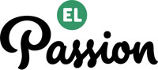
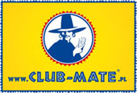
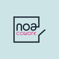

Witaj Warszawo!
Rails Girls comes to Warsaw: join the free, two-day crash-course to the exciting world of building web applications with Ruby on Rails.
Applications are now closed.
Rails Girls aims to give tools for girls and women to build their ideas.
You learn designing, prototyping and coding by doing it with help from our coaches.
You want to help? We are looking for volunteers and Rails coaches. Email us.
created by: Jakub Terczyński & Michał Kozieł
Have more? Send us the link at railsgirlswarsaw@gmail.com
| 15.00 - 17.00 |
Registration, pre-conference mixer & installation festGet to know the attendees a little bit before hand. We’ll also install Ruby on Rails on your computer, so bring your laptop with you. |
|---|---|
| 17.00 - 18.00 |
Welcome talksAleksandra LeszczKuba Kucharski Alicja Peszkowska Agnieszka Skala |
| 18.00 - 20.00 |
Tryruby.orgLet's get coding! |
| 20.00 - |
MiddlepartyOpen for everyone, meet people interested in tech. |
| 9:00 - 10:00 |
Breakfast & tea/coffee |
|---|---|
| 10:00 - 13:00 |
WorkshopJumpstart your first web application |
| 13:00 - 13:30 |
Lunch |
| 13.30 - 13.45 |
Bentobox - Understanding Web AppsRecap of what we’ve learned and how it all fits together. |
| 13.45 - 14.30 |
Lighting talksMagdalena Ostoja-ChyżyńskaAgata Mazur Bartek Janiak Radek Zalewski Adam Filipowski Emi Maj |
| 14.30 - 16.00 |
WorkshopExtend your application. |
| 16.00 - 16.30 |
Final lightning talksKamila StępniowskaOla Sitarska Joanna Majewska Paulina Makuch Magdalena Malinowska |
Application deadline: Friday, September 21st
Acceptances informed: Monday, September 24th
Location: Centrum Prasowe Foksal, ul. Foksal 3/5, Warsaw, Poland - Map
Rails Girls Warsaw is co-organized with our awesome partners.
 Google doesn’t need to be introduced to anyone. But let’s remind the company’s mission, which is to organize the world’s information and make it universally accessible and useful.
Google doesn’t need to be introduced to anyone. But let’s remind the company’s mission, which is to organize the world’s information and make it universally accessible and useful.
 Github Originally founded by Tom Preston-Werner, Chris Wanstrath, and PJ Hyett to simplify sharing code, GitHub has grown into the largest code host in the world.
Github Originally founded by Tom Preston-Werner, Chris Wanstrath, and PJ Hyett to simplify sharing code, GitHub has grown into the largest code host in the world.
El Passion is a Warsaw-based new media agency, we build rock solid applications for the web/mobile devices, and design stunning interfaces. We also love music.
 Positionly is a must have tool for every website owner who's serious about the position in search engines. Positionly makes website tracking and analyzing simple, and something you’ll actually enjoy.
Positionly is a must have tool for every website owner who's serious about the position in search engines. Positionly makes website tracking and analyzing simple, and something you’ll actually enjoy.
cdp.pl is a new project from CD Projekt, the most awarded and recognizable PC and console videogame distributor. The company focuses its operational activities on the Polish market continuously since 1994.
314 Apps is a UK based software house who provide high-quality bespoke software solutions to ensure that your business runs smoothly and efficiently at the front-end and behind-the-scenes.
 Touk is the team which makes IT better and simpler for big companies. We care a lot about software craftsmanship. We have fun using new technologies. We solve problems.
Touk is the team which makes IT better and simpler for big companies. We care a lot about software craftsmanship. We have fun using new technologies. We solve problems.
Applicake is a polish company, that builds web and mobile applications. Called "Ruby on Rails Gurus...“ by the Editor of TechCrunch Europe, Mike Butcher.
Club-mate.pl distributor of natural beverages.
piankablog.pl one girl focuses on sweets and gets the best advice for mastering desserts.
 SDP Warszawa Association of Polish Journalists Warsaw Branch
SDP Warszawa Association of Polish Journalists Warsaw Branch
Noa Cowork is an awesome coworking space in Warsaw city centre.


How much does the workshop cost? Nothing, it's free! You just need to be excited!
Who is this aimed for? Women of any age with basic knowledge of working with a computer. We’ve had people of all ages taking part. Most of the program is run in english and please bring your laptop.
How do you choose the attendees? We want a diverse group of people who are motivated and curious about learning.
Can men attend? Yes, but you need to be accompanied by an interested lady. Also, girls are given a priority.